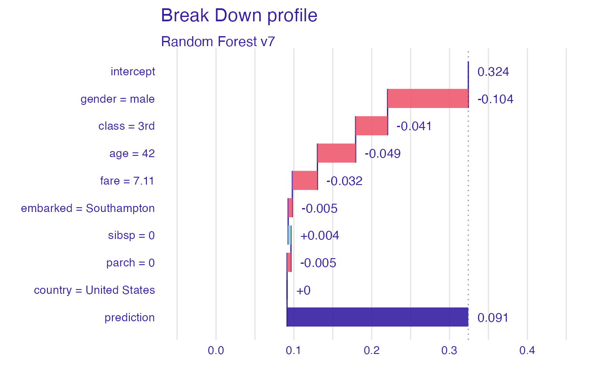
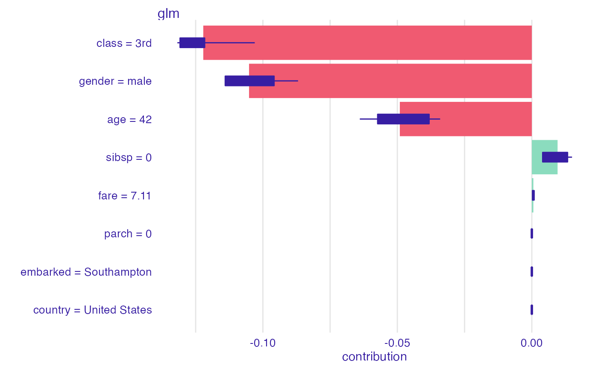

R/describe_breakdown.R, R/describe_shap.R
describe.RdGeneric function describe generates natural language explanations based on
break_down and shap explanations, what enhances their interpretability.
describe(x, nonsignificance_treshold = 0.15, ...) # S3 method for break_down describe( x, nonsignificance_treshold = 0.15, ..., label = NULL, short_description = FALSE, display_values = FALSE, display_numbers = FALSE, display_distribution_details = FALSE, display_shap = FALSE ) # S3 method for break_down_uncertainty describe( x, nonsignificance_treshold = 0.15, ..., label = NULL, short_description = FALSE, display_values = FALSE, display_numbers = FALSE, display_distribution_details = FALSE, display_shap = FALSE )
| x | an explanation created with |
|---|---|
| nonsignificance_treshold | a numeric specifying a treshold for variable importance |
| ... | other arguments |
| label | a character string describing model's prediction |
| short_description | a boolean, returns a short description |
| display_values | a boolean, displays variables' values |
| display_numbers | a boolean, displays a description containing numerical values |
| display_distribution_details | a boolean, displays details about the distribution of model's predictions |
| display_shap | a boolean, adds information about variables' average contribution. Use only with |
A character string of textual explanation
Function describe generates a textual explanations by extracting information from
a break_down or shap explanation. It makes an argument justifying why
the model's prediction is lower or higher, than it's average prediction. The description consists of
an introduction, argumenation and summary making use from the claim, support, evidence argumentation
structure, as recomended for the World Universities Debating style.
The function first selects one of four different scenarios, due to
nonsignificance_treshold. The chosen scenario can be one of the following:
1. Model's prediction for the selected instance is significantly higher than the average prediction.
2. Model's prediction is significantly lower.
3. Model's prediction is close to it's average prediction, however there are significant
variables counteracting with each other
4. Model's prediction is close to it's average prediction and all the variables are rather nonsignificant.
Then an explanation due to the chosen scenario is generated.
library("DALEX") library("randomForest") library("iBreakDown") titanic <- na.omit(titanic) model_titanic_rf <- randomForest(survived == "yes" ~ gender + age + class + embarked + fare + sibsp + parch, data = titanic)#> Warning: The response has five or fewer unique values. Are you sure you want to do regression?explain_titanic_rf <- explain(model_titanic_rf, data = titanic[ ,-9], y = titanic$survived == "yes", label = "Random Forest v7")#> Preparation of a new explainer is initiated #> -> model label : Random Forest v7 #> -> data : 2099 rows 8 cols #> -> target variable : 2099 values #> -> predict function : yhat.randomForest will be used ( default ) #> -> predicted values : numerical, min = 0.009336143 , mean = 0.3241657 , max = 0.9938348 #> -> model_info : package randomForest , ver. 4.6.14 , task regression ( default ) #> -> model_info : Model info detected regression task but 'y' is a logical . ( WARNING ) #> -> model_info : By deafult regressions tasks supports only numercical 'y' parameter. #> -> model_info : Consider changing to numerical vector. #> -> model_info : Otherwise I will not be able to calculate residuals or loss function. #> -> residual function : difference between y and yhat ( default ) #> -> residuals : numerical, min = -0.7984406 , mean = 0.0002744759 , max = 0.8964633 #> A new explainer has been created!bd_explanation <- break_down(explain_titanic_rf, titanic[1, ], keep_distributions = TRUE) plot(bd_explanation)description <- describe(bd_explanation, label = "the passanger will survive with probability", short_description = FALSE, display_values = TRUE, display_numbers = TRUE, display_distribution_details = FALSE) description#> Random Forest v7 predicts, that the passanger will survive with probability 0.091 which is lower than the average model prediction 0.324. For the selected instance model's prediction is lower, than for 89% of all observations. #> #> The most important variable is gender (= male). It decreases the prediction by 0.104. #> The second most important variable is age (= 42). It decreases the prediction by 0.049. #> The third most important variable is class (= 3rd). It decreases the prediction by 0.041. #> #> Other variables are with less importance. The contribution of all other variables is -0.039.library("DALEX") library("iBreakDown") titanic <- na.omit(titanic) model_titanic_glm <- glm(titanic$survived == "yes" ~ age + gender + class + fare + sibsp, data = titanic[ ,-9], family = "binomial") explain_titanic_glm <- explain(model_titanic_glm, data = titanic[,-9], y = titanic$survived == "yes", label = "glm")#> Preparation of a new explainer is initiated #> -> model label : glm #> -> data : 2099 rows 8 cols #> -> target variable : 2099 values #> -> predict function : yhat.glm will be used ( default ) #> -> predicted values : numerical, min = 0.009479803 , mean = 0.3244402 , max = 0.9742069 #> -> model_info : package stats , ver. 4.0.3 , task classification ( default ) #> -> model_info : Model info detected classification task but 'y' is a logical . Converted to numeric. ( NOTE ) #> -> residual function : difference between y and yhat ( default ) #> -> residuals : numerical, min = -0.9742069 , mean = -2.864556e-10 , max = 0.9662286 #> A new explainer has been created!describe(shap_glm, label = "the selected passanger survives with probability", display_shap = TRUE, display_numbers = TRUE)#> Glm predicts, that the selected passanger survives with probability 0.058 which is lower than the average model prediction 0.324. For the selected instance model's prediction is lower, than for 94% of all observations. #> #> The most important variable is class. It decreases the prediction by 0.122. #> The second most important variable is gender. It decreases the prediction by 0.105. #> The third most important variable is age. It decreases the prediction by 0.049. #> The average contribution of all the above variables is significant. #> #> Other variables are with less importance. The contribution of all other variables is 0.01.